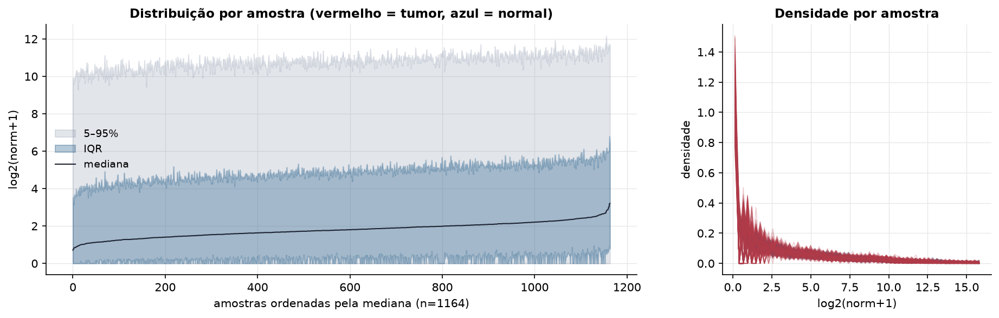
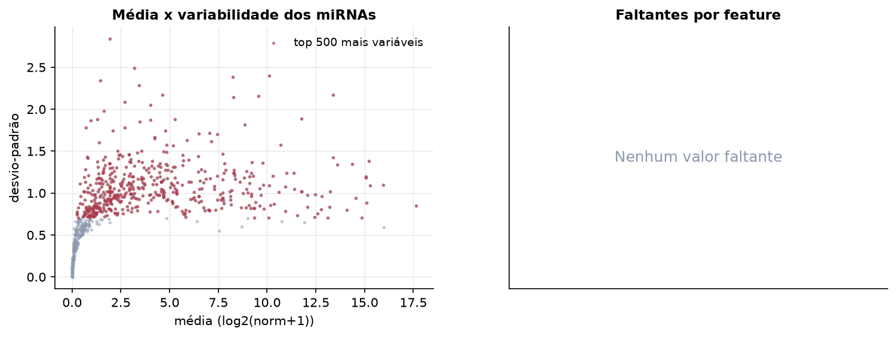
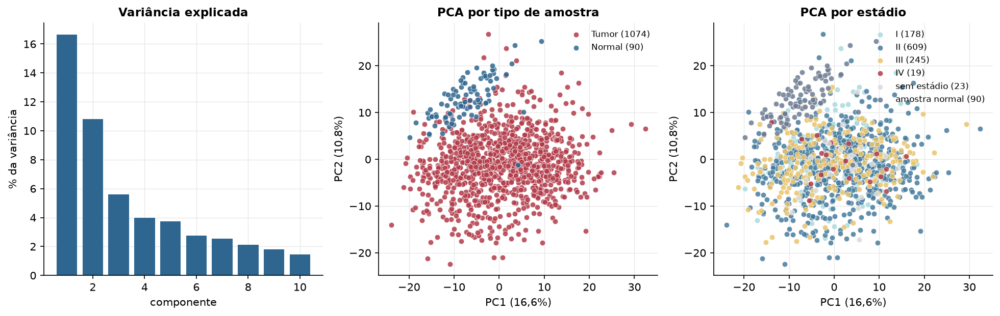
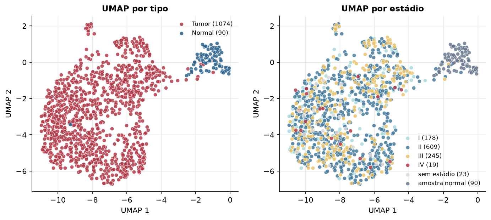
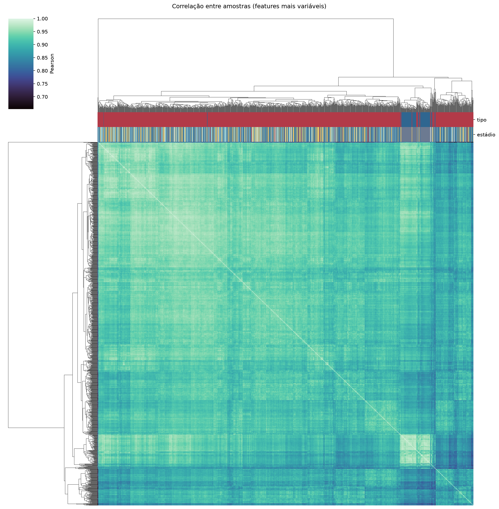
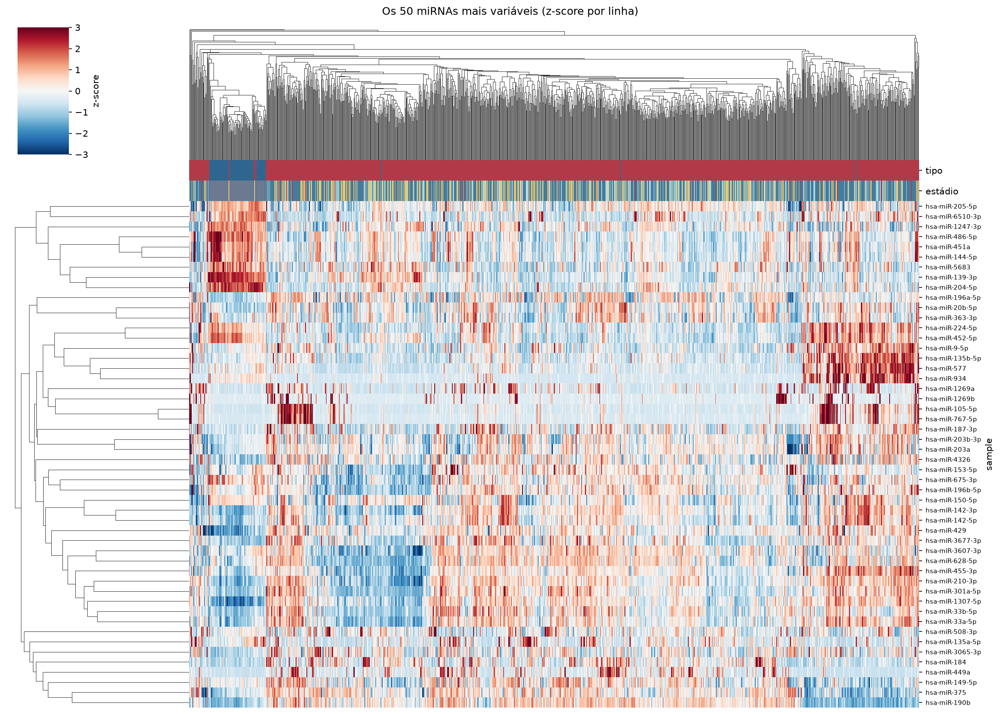
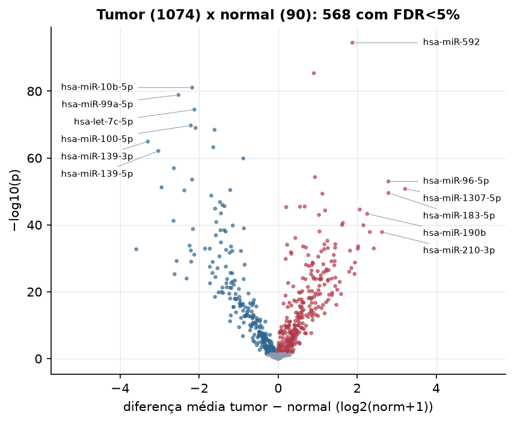
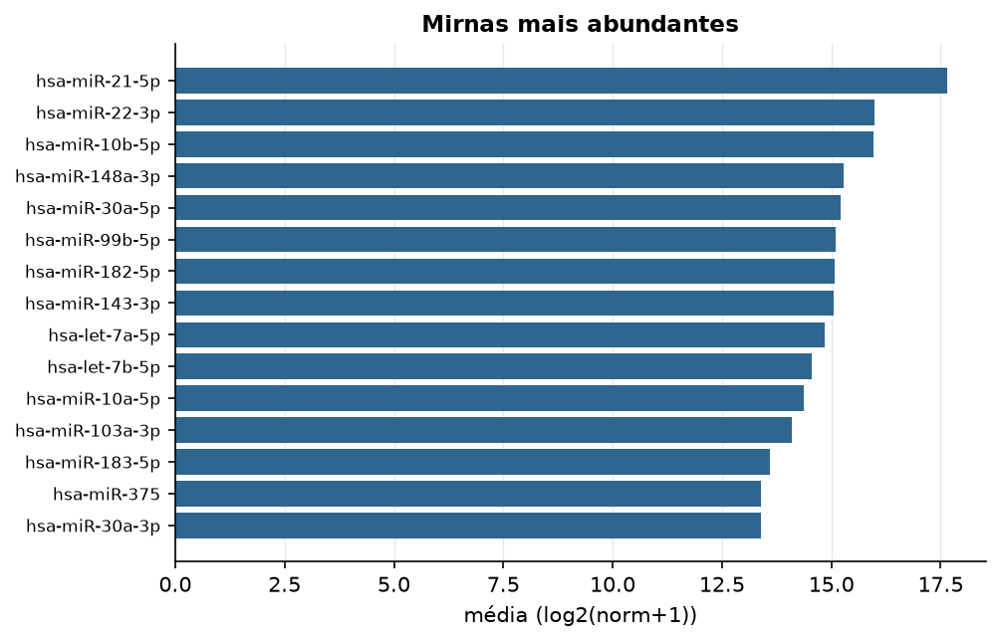

BRCA · miRNA-seq (PanCanAtlas)
miRNA maduro, normalizado e corrigido por lote (EB), log2(x+1) · gerado em 21/10/2026 19:11
743miRNAs
1.074amostras tumorais
90amostras normais
0,0%valores faltantes
Fonte: PanCanAtlas (pancanMiRs_EBadjOnProtocolPlatformWithoutRepsWithUnCorrectMiRs_08_04_16.xena)
Fita madura (5p/3p) já normalizada. As contagens brutas por precursor estão no relatório de contagens.
Principais resultados
- 743 miRNAs medidos em 1164 amostras (1074 tumorais e 90 normais); 0,0% dos valores estão faltando.
- Os dois primeiros componentes principais explicam 16,6% e 10,8% da variância das features mais variáveis.
- Correlação mediana entre amostras: 0,92.
- Amostras com correlação muito abaixo das demais (possíveis outliers técnicos): TCGA-AC-A2QH-01, TCGA-BH-A1FE-06, TCGA-AC-A2BK-01, TCGA-A2-A25F-01, TCGA-OL-A5D7-01.
- Tumor x normal: 568 miRNAs diferentes com FDR < 5% (315 maiores no tumor, 253 maiores no normal; 89 pacientes têm o par tumor-normal).
- Mais aumentados no tumor: hsa-miR-592, hsa-miR-4724-5p, hsa-miR-183-3p, hsa-miR-96-5p, hsa-miR-1307-5p, hsa-miR-183-5p, hsa-miR-7-5p, hsa-miR-301b.
- Mais reduzidos no tumor: hsa-miR-10b-5p, hsa-miR-99a-5p, hsa-let-7c-5p, hsa-miR-100-5p, hsa-miR-125b-2-3p, hsa-miR-10b-3p, hsa-miR-139-3p, hsa-miR-145-3p.
- Associações clínicas com p < 0,05 nos componentes principais: PC2 com estádio (p=0.01); PC3 com sexo (p=0.035); PC1 com idade (p=0.023); PC2 com idade (p=0.00027); PC3 com idade (p=0.0029).
Distribuição dos valores


Estrutura das amostras




Tumor x normal

Features mais diferentes entre tumor e normal
| sample | diferenca_tumor_menos_normal | t | p | fdr |
|---|---|---|---|---|
| hsa-miR-592 | 1.88 | 34.26 | 3.34e-95 | 2.47e-92 |
| hsa-miR-4724-5p | 0.903 | 22.553 | 4.45e-86 | 1.64e-83 |
| hsa-miR-10b-5p | -2.177 | -37.761 | 8.84e-82 | 2.18e-79 |
| hsa-miR-99a-5p | -2.524 | -35.321 | 1.35e-79 | 2.5e-77 |
| hsa-let-7c-5p | -2.123 | -32.587 | 3.3e-75 | 4.88e-73 |
| hsa-miR-100-5p | -2.211 | -32.071 | 1.9e-70 | 2.34e-68 |
| hsa-miR-125b-2-3p | -2.09 | -30.689 | 1.02e-69 | 1.08e-67 |
| hsa-miR-10b-3p | -1.611 | -30.275 | 3.76e-69 | 3.47e-67 |
| hsa-miR-139-3p | -3.3 | -35.051 | 1.24e-65 | 1.02e-63 |
| hsa-miR-145-3p | -1.644 | -29.958 | 6.04e-64 | 4.46e-62 |
| hsa-miR-139-5p | -3.036 | -34.2 | 7.83e-63 | 5.26e-61 |
| hsa-miR-28-3p | -0.884 | -25.216 | 1.32e-60 | 8.14e-59 |
| hsa-miR-1247-3p | -2.641 | -24.989 | 1.16e-57 | 6.57e-56 |
| hsa-miR-183-3p | 0.93 | 21.953 | 5.21e-55 | 2.75e-53 |
| hsa-miR-125b-5p | -2.18 | -26.891 | 2.9e-54 | 1.43e-52 |
| hsa-miR-96-5p | 2.791 | 28.212 | 1.04e-53 | 4.81e-52 |
| hsa-miR-204-5p | -2.953 | -27.372 | 5.92e-52 | 2.57e-50 |
| hsa-miR-1307-5p | 3.214 | 26.242 | 1.8e-51 | 7.38e-50 |
| hsa-miR-30a-3p | -1.213 | -18.643 | 3.69e-51 | 1.44e-49 |
| hsa-miR-145-5p | -2.375 | -26.477 | 4.96e-51 | 1.83e-49 |
| hsa-miR-183-5p | 2.791 | 26.664 | 2.86e-50 | 1.01e-48 |
| hsa-miR-7-5p | 1.119 | 19.33 | 4.71e-50 | 1.58e-48 |
| hsa-miR-584-5p | -1.694 | -22.215 | 1.81e-49 | 5.82e-48 |
| hsa-miR-99a-3p | -1.474 | -22.747 | 1.51e-47 | 4.65e-46 |
| hsa-miR-199b-5p | -1.409 | -20.571 | 1.1e-46 | 3.26e-45 |
| hsa-miR-140-3p | -1.358 | -21.672 | 2.67e-46 | 7.59e-45 |
| hsa-miR-301b | 0.67 | 17.743 | 3.43e-46 | 9.38e-45 |
| hsa-miR-155-3p | 0.552 | 16.883 | 3.82e-46 | 1.01e-44 |
| hsa-miR-96-3p | 0.204 | 15.533 | 4.96e-46 | 1.26e-44 |
| hsa-miR-195-5p | -1.595 | -22.327 | 1.42e-45 | 3.49e-44 |
Associação com variáveis clínicas
p-valores da associação dos três primeiros componentes principais (só tumores) com estádio (Kruskal-Wallis), sexo (Mann-Whitney), idade (Spearman) e sobrevida global (Cox univariado).
| estádio (Kruskal) | sexo (Mann-Whitney) | idade (Spearman) | sobrevida OS (Cox) | |
|---|---|---|---|---|
| PC1 (16,9%) | 0.067 | 0.816 | 0.023 | 0.276 |
| PC2 (9,4%) | 0.01 | 0.385 | 0.000268 | 0.719 |
| PC3 (6,0%) | 0.606 | 0.035 | 0.003 | 0.623 |
Mais abundantes
